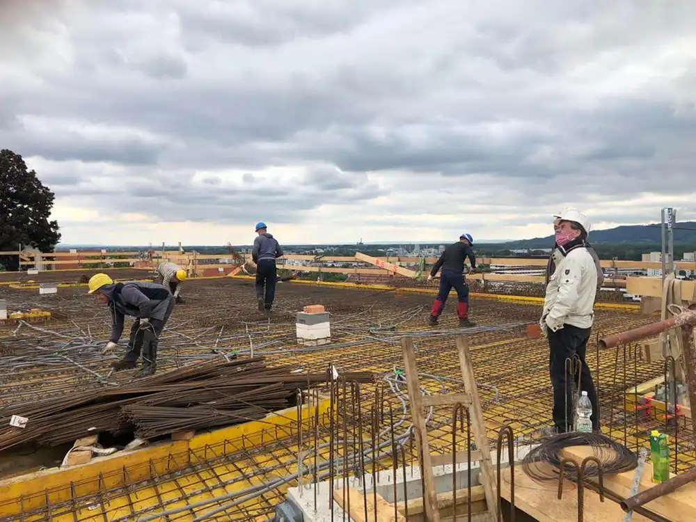

Baukoordination bei den Bewehrungsarbeiten
Unser Auftrag war die Baustellenkoordination in der Rohbauphase. Bei Arbeiten an der Deckenbewehrung betrifft das vor allem die gemeinsame Arbeitsfläche. Wir stimmen mit den beteiligten Firmen ab, welche Zugänge sie brauchen und wo sich ihre Arbeiten überschneiden.
Mehr über Baukoordination